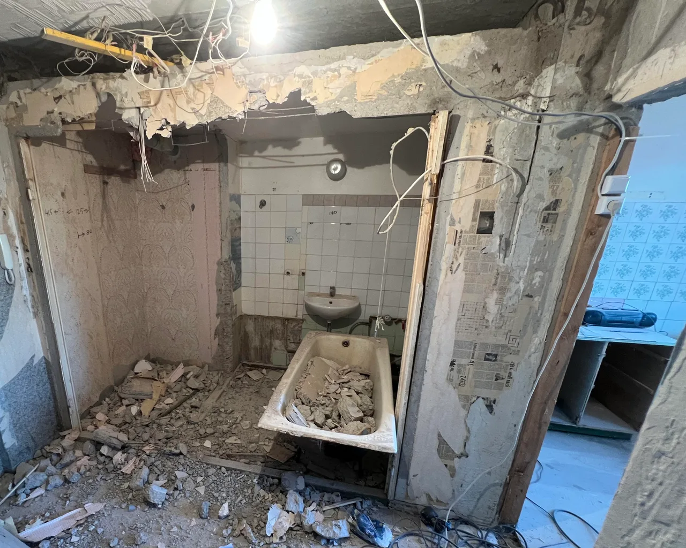
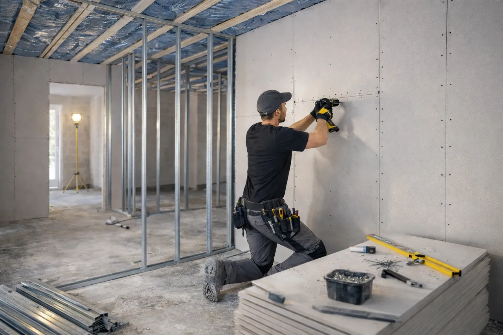
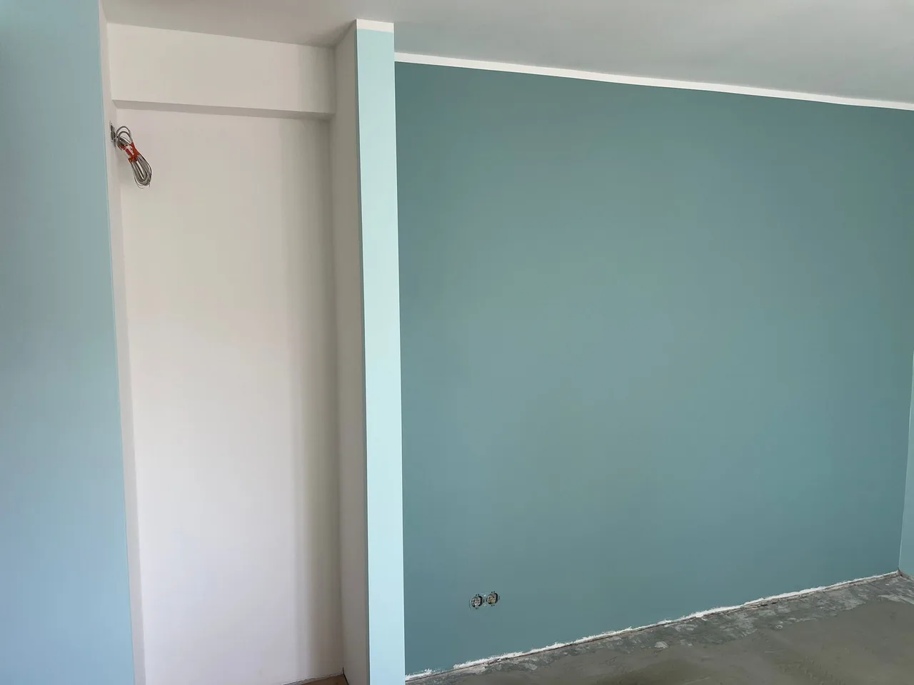

Korteri remont ja täisremont võtmed kätte
Korteri remont Tallinnas ja Harjumaal ettevalmistusest lõppviimistluseni. Meie korraldame tööd, sina saad keskenduda oma uuele kodule.
Küsi hinnapakkumist- 3-aastane garantii ettevõtte tehtud töödele vastavalt kokkulepitud tingimustele
- Tallinn ja Harjumaa
- Selge hinnapakkumine ja läbimõeldud töökorraldus
Mida korteri täisremont sisaldab?
RK Meistrid OÜ korraldab tööetapid alates ettevalmistusest ja lammutamisest kuni lõppviimistluse ning üleandmiseni. Sina ei pea ise eri tööde tegijaid otsima ega nende tööjärjekorda korraldama. Korteri täisremont seob ehitus- ja viimistlustööd üheks läbimõeldud tervikuks. Teenuse ulatus sõltub korteri seisukorrast, sinu soovidest ja kokkulepitud töömahust. Järgmised etapid on võimalikud tööd, mitte iga hinnapakkumise automaatsed osad.




Objekti ülevaatus ja töömahu määramine
Vaatame üle korteri seisukorra, mõõdud, sinu soovid ja säilitatavad pinnad. Lepime kokku soovitud valmidusastme ning tööde piirid.
Vajalik lammutamine
Eemaldame kokkulepitud vana viimistluse ja vajalikud konstruktsioonid. Enne seinte muutmist selgitame välja nende otstarbe, kommunikatsioonide asukohad ning projekti või kooskõlastuste vajaduse.
Jäätmete eemaldamine ja utiliseerimine
Lepime kokku jäätmete sortimise, äraveo ja nõuetekohase üleandmise, samuti tööala ning ühiskasutatavate pindade kaitsmise.
Vaheseinte ehitus ja kipsitööd
Ehitame kokkulepitud vaheseinad, karkassid ja kipslaed. Kipsitööd planeerime koos juhtmete, torude ja läbiviikudega.
Elektri- ja torutööd
Vajalikud elektri- ja torutööd korraldame vastava pädevusega koostööpartnerite kaudu. Nende töömaht, vastutus ja ajastus määratakse enne viimistlust.
Vannitoa ja WC remont
Lepime kokku märgruumide remondi ulatuse, seadmete asukohad, aluspindade taastamise ja sanitaarseadmete paigalduse.
Hüdroisolatsioon ja plaatimine
Valmistame ette sobivad aluspinnad ja kalded, teeme kokkulepitud hüdroisolatsiooni ning plaatimistööd, järgides kasutatava süsteemi juhiseid.
Seinte ja lagede viimistlus
Parandame, pahteldame, lihvime ja krundime pinnad ning teeme värvimistööd. Soovi korral lepime kokku ka tapeetimise.
Põrandakatte paigaldamine
Kontrollime aluspinna sobivust ja niiskustingimusi. Paigaldame kokkulepitud parketi, laminaadi või muu põrandakatte; vaata ka põrandatööde teenust.
Siseuksed, liistud ja viimistlusdetailid
Paigaldame pakkumises määratud siseuksed, liistud ning muud viimistluselemendid ja lõpetame ühenduskohad.
Lõppkontroll ja tööde üleandmine
Kontrollime kokkulepitud tööde valmimist ning vaatame tulemuse koos sinuga üle. Täpsustame vajaduse korral parandused, hoolduse ja garantiitingimused.
Tööde loetelus täpsustame ka materjalid, jäätmeveo ja paigaldused. Köögimööbel, sisustus ja seadmed kuuluvad remondi hulka ainult eraldi kokkuleppel. Lammutustööde vajaduse ja ohutu ulatuse määrame enne alustamist.
Värskendusremont või täisremont?
Värskendusremont
Sobib siis, kui korteri planeering ja tehnosüsteemid vastavad vajadustele ning soovid uuendada olemasolevaid pindu. Keskendume parandamisele, seinte ja lagede värvimisele või tapeetimisele ning vajadusel põrandakatte ja liistude vahetamisele.
Täisremont ja kapitaalremont
Sobib siis, kui korter vajab põhjalikku uuendamist. Korteri kapitaalremont võib hõlmata lammutamist, uusi vaheseinu, elektri- ja torusüsteemide muudatusi, vannitoa remonti ning terviklikku siseviimistlust.
Kui sa ei tea, milline lahendus sobib, kirjelda soovitud tulemust ja lisa korterist fotod. Objekti ülevaatusel aitame hinnata, mida saab säilitada ning mida tuleks uuendada.
Kuidas toimub võtmed kätte remont?
RK Meistrid OÜ koordineerib kokkulepitud tööetappe, materjalide liikumist ja koostööpartnerite ajastust. Sul on ühine tööplaan ning selge kontakt tööde arutamiseks.
Päring
Saada korteri asukoht, pindala, soovitud tööd ja võimalusel fotod või plaan. Lisa ka eeldatav alustamise aeg.
Objekti ülevaatus
Hindame seisukorda, mõõte, ligipääsu ja tehnilisi vajadusi. Selgitame välja ka kortermajas töötamise tingimused.
Hinnapakkumine
Koostame pakkumise kokkulepitud tööde ja materjalide alusel. Täpsustame valmidusastme ning selle, millised tööd pakkumisse kuuluvad.
Tööde planeerimine
Korraldame etappide järjekorra, materjalide hankimise ja tarned vastavalt kokkuleppele. Koostööpartnerite tööd ning kuivamisajad arvestame graafikusse.
Teostus
Teeme kokkulepitud ehitus- ja viimistlustööd ning hoiame sind käiguga kursis. Varjatud kahjustustest või muudatuste vajadusest anname teada; lisatööde mahu ja hinna lepime kokku enne tegemist.
Kvaliteedikontroll
Kontrollime aluspindu ja tööetappide tulemust enne järgmiste kihtidega katmist ning vaatame üle lõppviimistluse.
Üleandmine
Vaatame valminud tööd koos sinuga üle, fikseerime vajaduse korral parandused ning selgitame hooldust ja kokkulepitud garantiitingimusi.
Ajakava koostame konkreetse töömahu järgi. Materjalide tarneaeg, kuivamine ja lammutamisel ilmnevad asjaolud võivad graafikut mõjutada. Võimalikud muudatused arutame sinuga läbi.
Korteri remondi maksumus
Korteri remondi maksumust ei saa usaldusväärselt arvutada ainult põrandapinna järgi. Sama suurusega korter võib vajada kas uut viimistlust või vana sisustuse eemaldamist, aluspindade taastamist ja tehnosüsteemide uuendamist.
- Korteri suurus ja seisukord: pindala, ruumide arv ning olemasolevate aluspindade seisund.
- Lammutustööde maht: eemaldatavad pinnad ja konstruktsioonid, jäätmekogus ning ligipääs.
- Elektri- ja torusüsteemide muudatused: ühenduste asukohad, olemasolevate süsteemide seisukord ja uuendamise ulatus.
- Vannitubade arv ja keerukus: ruumide lahendus, kalded, hüdroisolatsioon, seadmed ja plaatimistööde maht.
- Materjalide valik: põrandakatted, plaadid, värvid, uksed ja muud viimistlusmaterjalid.
- Viimistluse tase: soovitud tulemus, detailide keerukus ja aluspindade ettevalmistus.
- Tööde kogumaht: kokkulepitud etapid, materjalide hankimine, kaitsmine ja üleandmise ulatus.
Renoveerimistööde hinnakirjast leiad üksikute tööde orienteeruvad alghinnad. Terve korteri pakkumises täpsustame töömahud ja materjalid eraldi; üksiku töö ühikuhind ei ole korteri täisremondi m² hind.
Päringule lisa korteri pindala, asukoht, fotod, soovitud tööde loetelu ja ajavahemik. Märgi ka, kas korter on tühi või kasutuses.
Saada töö kirjeldus ja fotodÜksikud tööetapid ja seotud teenused
Kui kogu korter remonti ei vaja, saab tellida ka sobivad tööetapid eraldi.
Näiteid korteriremondi tööetappidest
Vaata vannitoa plaatimise tööetappi eraldi projektinäitena. Põrandatööde ettevalmistust ja paigaldust kirjeldab parketi paigalduse teenuse leht.

Miks valida RK Meistrid OÜ?
Pikaajaline ehitusvaldkonna kogemus aitab hinnata, millised lahendused sobivad korteri seisukorra ja soovitud tulemusega. Terviklikul remondil seome erinevad tööetapid ühiseks plaaniks.
- Tööetappide koordineerimine. Korraldame kokkulepitud ehitus- ja viimistlustööd ning vajalikud koostööpartnerite tööd.
- Selge suhtlus ja kokkulepped. Täpsustame töömahu, materjalid ja vastutuse ning arutame muudatused enne teostamist läbi.
- Läbimõeldud tööjärjekord. Arvestame tehnosüsteemide, aluspindade, kuivamisaegade ja viimistluse omavahelisi sõltuvusi.
- Kvaliteedikontroll. Kontrollime tööetappe ja lõpptulemust. Loe lähemalt meie kvaliteedikontrolli põhimõtetest.
- 3-aastane garantii. Ettevõtte tehtud töödele kehtib garantii vastavalt kokkulepitud ulatusele ja tingimustele. Koostööpartnerite tööde vastutuse ning garantiitingimused täpsustame eraldi.
Materjalid ja tööetapid planeerime ühtseks tervikuks
Tehnosüsteemid enne viimistlust
Enne seinte sulgemist täpsustame elektripunktid, torustiku, ventilatsiooni ja seadmete asukohad. Vajalikud katsed ning kontrollid tehakse enne katmist. Nii ei pea uut värvi, tapeeti või plaate hiljem ühenduste pärast lahti võtma.
Kuivamisajad kuuluvad graafikusse
Pahtli, tasanduse, hüdroisolatsiooni ja liimide kuivamine sõltub tootest ning objekti kliimast. Kõvenenud betoon ei pruugi olla põrandakatte jaoks piisavalt kuiv. Järgmise etapi algus kinnitatakse juhendite ja vajadusel niiskusmõõtmise järgi.
Materjalid ja pakkumise piirid
Valime ruumi kasutusele sobivad värvid, põrandad ja märgruumi süsteemid. Pakkumises täpsustame materjalid, kogused, jäätmeveo, kaitsmise ning tööde üleandmise. Ootamatud aluspinna kahjustused hinnatakse enne lisatöö tegemist; kliendi valikud ja muudatused kajastuvad kokkuleppes.
Päringu ettevalmistamiseks: Lisa ruumide mõõdud ja fotod, soovitud tööde loetelu ning teadaolevad tehnosüsteemide probleemid. Märgi, kas korter jääb remondi ajal kasutusse ja millised mööbliesemed tuleb säilitada.
Korduma kippuvad küsimused
Kui kaua kestab korteri täisremont?
Kestus sõltub korteri seisukorrast ja tööde ulatusest. Ajakavas arvestame lammutuse, tehnosüsteemide, aluspindade kuivamise, materjalide tarne ja lõppviimistlusega. Orienteeruva graafiku koostame pärast objekti ülevaatust ning võimalike muudatuste korral täpsustame selle koos sinuga.
Kas korteris saab remondi ajal elada?
Üksiku ruumi värskendamisel võib see olla võimalik, kui tööala saab eraldada. Täisremondi puhul raskendavad elamist tolm, müra ning vee või elektri katkestused. Ruumide kasutamise ja ajutise elukoha vajaduse arutame läbi enne töö algust.
Kas korraldate ka elektri- ja torutööd?
Jah, vajadusel korraldame elektri- ja torutööd vastava pädevusega koostööpartnerite kaudu. Pakkumises täpsustame töömahu, vastutuse ja ajastuse. Need tööd ei sisaldu automaatselt igas remondipakkumises.
Kas klient võib ise materjalid valida?
Jah. Aitame hinnata valitud materjalide sobivust ruumi kasutuse ja aluspindadega. Lepime kokku, mida ostad sina ning mida hangime meie, ja arvestame tarnetega tööde planeerimisel. Materjalide hilisemad muudatused võivad mõjutada hinda ja ajakava.
Kas teete ka väiksemaid korteriremonte?
Jah, lisaks täisremondile saab kokku leppida värskendusremondi või üksiku ruumi ja tööetapi. Kirjelda soovitud tööd ja lisa fotod, et saaksime hinnata sobivat lahendust ning töömahtu.
Kuidas kujuneb lõplik hinnapakkumine?
Pakkumine lähtub objekti ülevaatusest, kokkulepitud tööde loetelust, mõõtudest, materjalidest ja soovitud valmidusastmest. Täpsustame, millised tööd ning kulud on hinnas. Varjatud kahjustustest tulenevad lisatööd ja sinu soovitud muudatused lepime enne tegemist eraldi kokku.
Kas remonti saab teha etappide kaupa?
Jah, kui tööde tehniline järjekord ja korteri kasutamine seda võimaldavad. Aitame valida mõistlikud etapid, et hilisem töö ei kahjustaks valmis pindu. Mitmes etapis remont võib tähendada korduvat ettevalmistust ning mõjutada kogukulu ja ajakava.
Milline garantii töödele kehtib?
RK Meistrid OÜ annab ettevõtte tehtud töödele 3-aastase garantii vastavalt kokkulepitud ulatusele ja tingimustele. Garantiiga hõlmatud tööd ja hooldusjuhised täpsustame kokkuleppes. Koostööpartnerite tööde vastutuse ning garantiitingimused määrame eraldi.
Planeerid korteri remonti? Küsi hinnapakkumist.
Kirjelda olemasolevas kontaktvormis korteri asukohta, ligikaudset pindala, soovitud töid ja eeldatavat alustamise aega. Lisa võimalusel fotod või plaan ning märgi, kas korter on tühi või kasutuses. Selle põhjal täpsustame töömahtu ja objekti ülevaatuse vajadust.
Küsi hinnapakkumist